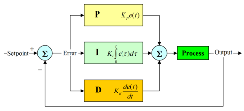

march 2008
Application Ideas 
This page contains a number of ideas, I want to implement in PyLab_Works.
Most of the pictures are borrowed from other applications / websites.
Time-Space-Relativity-Theory
see also Visual demos
Visualizing Proper Time in Special Relativity [with LightClocks] (Rob Salgado)

Magnetic Field Visualization
through ephi or VFGen
Course Time-Frequency domain
Fourier / Laplace / Wavelet
Control Systems & Modelling
Implementing Control Systems is a very interesting task. If you look at a control system, you can see it's very easy to implement it in the Brick designer. But this has two disadvantages, you don't want the normal domain user to use the designer and secondly the simulation is probably to slow and closed loop solutions are not easy to obtain. Further more you want interaction from the graphs (e.g. shifting poles and zeroes) back into the system. So probably it will end up with a new control, which is an almost copy of the brick designer. (There are applications were something similar is needed, like the robot in a room with obstacles).

Neural Nets
Geometric Optics
Laser Optics
Robots in a 2D space
PyLab_Works started as a fork of a micro-controller simulator, called JALsPy, also written in Python. Implementing parts of this project would be fun. Here an image of JALsPy.
Canon ball trajectory
This example shows a scenery, where you can place objects, e.g. a canon and a target and by controlling the parameters (i.e. launching angle, ignition energy, gravity, mass of the bullet, wind) you can try to hit the target. The example also includes a code editor, where you can make your pre-calculations.
VPython integration
Education for Kids